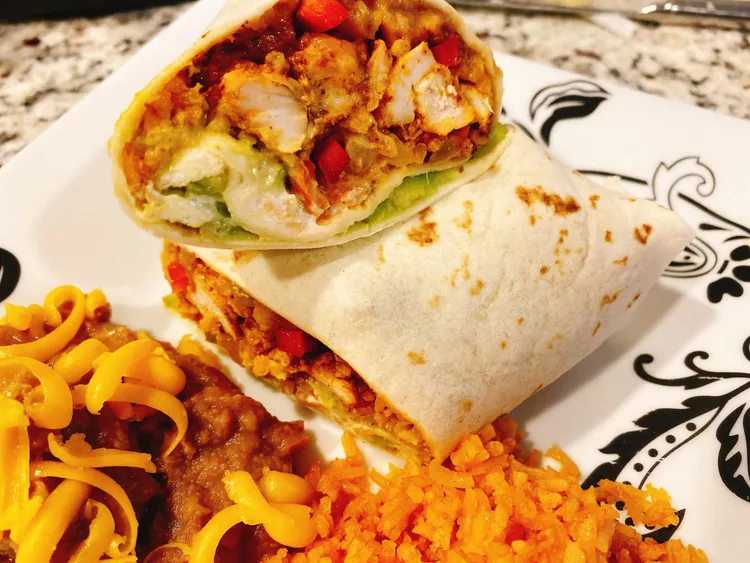

Burrito
Home

Description
This recipe takes the best of fajitas and burritos and combines them for
one tasty food fusion!
Ingredients
-
Chicken Breast (boneless, skinless, cut into thins strips): 10
ounces
-
Onion (cut into strips): 1/2
-
Multi-Coloured Bell Pepper Strips: 5 ounces
-
Vegetable Oil: 2 tbsp
-
Lime (juiced): 1/2
-
Fajita Seasoning: 2 tbsp
-
Refried Beans (warm): 1 cup
-
Cheddar Cheese (shredded): 2/3 cups
-
Mexican Rice (cooked): 1 1/2 cups
-
Sour Cream: 1/4 cup
-
Guacamole: 1/3 cup
Steps
-
Place chicken, onion, bell pepper, oil, lime juice, and fajita
seasoning in a resealable plastic bag. Seal the bag and squeeze to
ensure all ingredients are combined and well-coated; place in the
refrigerator to marinate for 2 hours.
-
Preheat the oven to 400 degrees F (200 degrees C). Line a sheet pan
with foil. Spread fajita mixture onto sheet pan in a single layer.
-
Bake in the preheated oven until chicken juices run clear, about 25
minutes. An instant-read thermometer inserted into the chicken
strips should read 165 degrees F (74 degrees C).
-
Wrap tortillas in a damp paper towel, and warm in the microwave
until soft and pliable, about 30 seconds. To assemble burritos,
spread 1/4 of each of the refried beans, cheese, rice, fajita
mixture, sour cream, and guacamole in a line across the middle of
each tortilla.
-
Fold opposing sides of the tortilla in, overlapping the filling.
Roll the bottom edge up tightly around the filling, then roll the
burrito away from you, keeping the sides folded in.